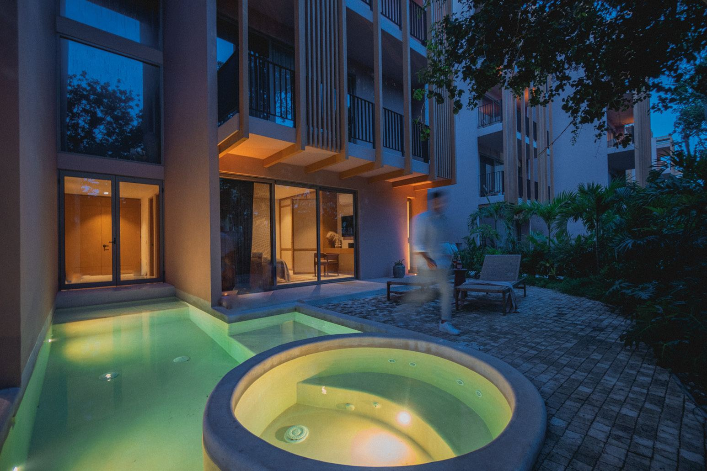
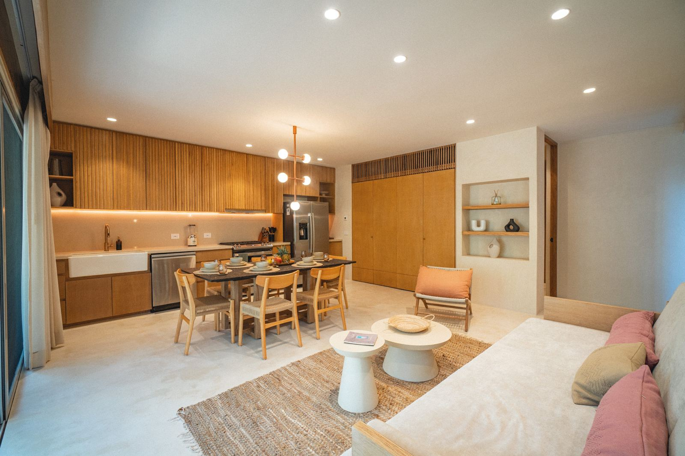
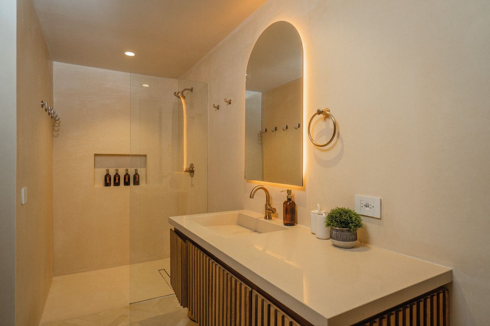
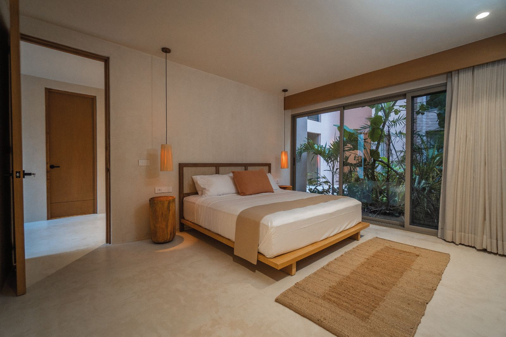

Aldea Zamá, Tulum
Aflora Garden Residence
Three-bedroom garden residence with private plunge pool



A ground-floor residence within the AFLORA community in Aldea Zamá, where open living spaces and floor-to-ceiling sliding doors give onto a private terrace and plunge pool. A gourmet kitchen, family room, primary suite with walk-in closet and service quarters suit a full-time home. Residents share resort-style pools, a spa, fitness centre and yoga studio, with 24-hour security and controlled access.
Highlights
- Private plunge pool and expansive terrace
- Primary suite with walk-in closet
- Gourmet kitchen, family room and service quarters
- Premium stone and wood finishes
- Resort pools, spa, fitness, coworking and 24-hour security

Request the brochure and a private viewing
Information deemed reliable but not guaranteed. Price and availability subject to change without notice. Prices in Mexican pesos are subject to the exchange rate agreed at signing. Measurements are approximate and must be verified against the relevant documentation.

Find your place in Tulum
Tell me what you are looking for and I will come back with a considered answer, not a list of listings.
Start the conversationWhatsApp